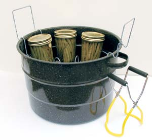

MATTHEW T. STALLBAUMER
Pickles, acidic tomatoes and sweetened chutneys or fruit preserves have a pH level below 4.5 that retards bacterial growth, so they can be canned in a large water bath canner. A water bath canner is nothing more than a large pot with a metal tray or rack that holds glass jars at least a half inch off the bottom.